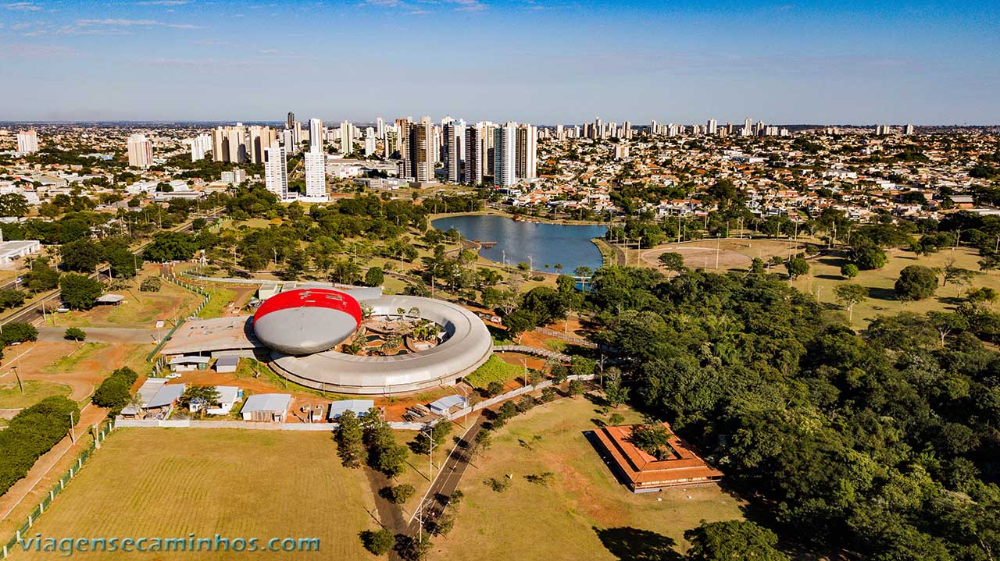
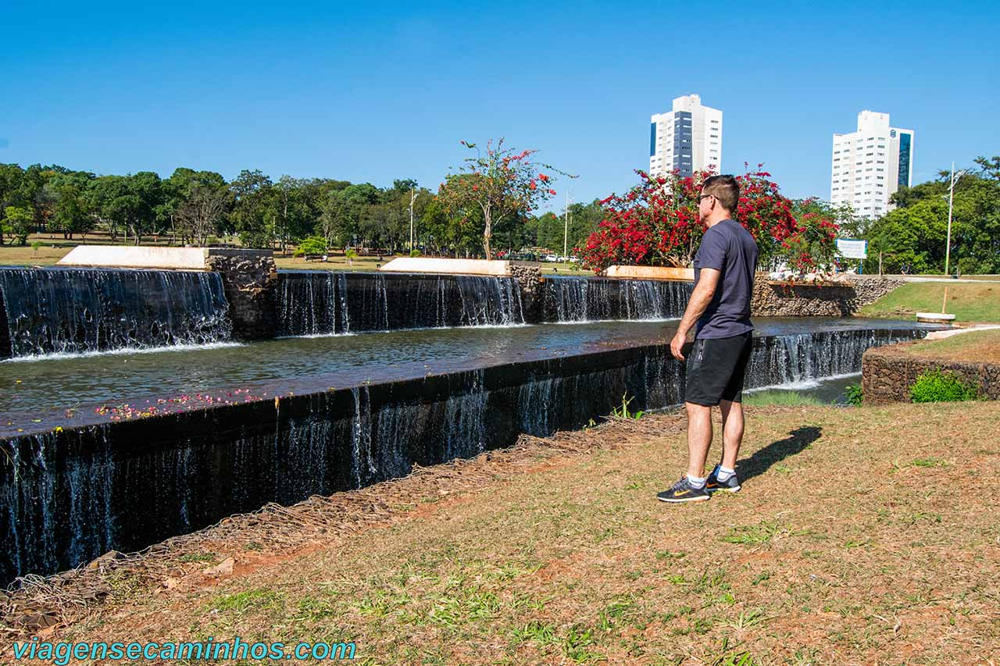
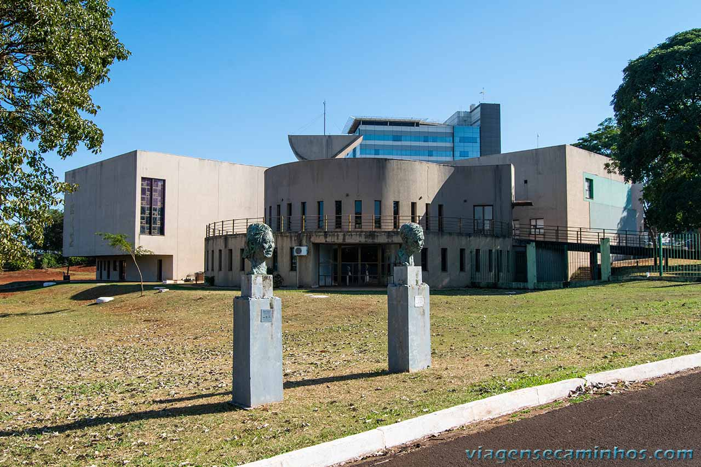
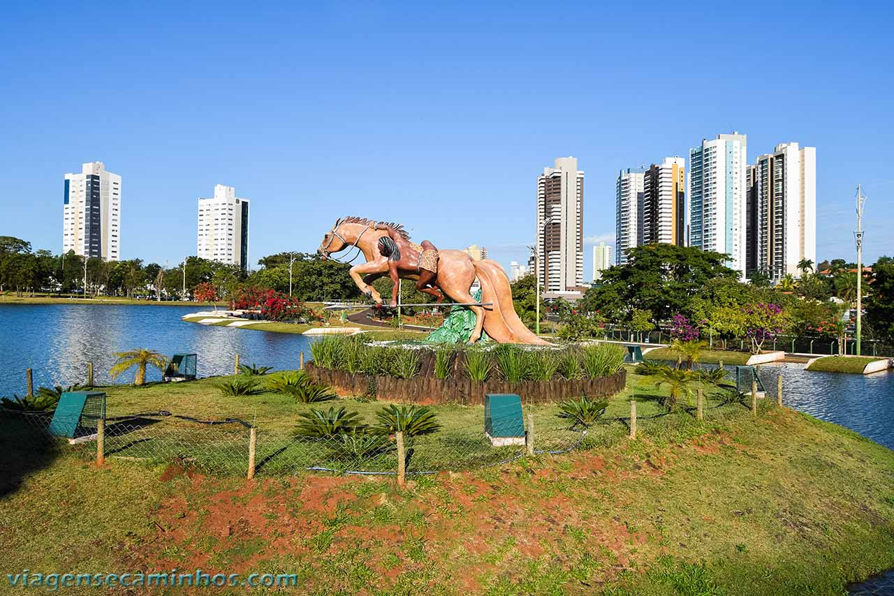

Cidade Morena
Campo Grande
Venha Visitar
Sobre a Cidade de Campo Grande
Campo Grande é um município brasileiro da região Centro-Oeste, capital do Estado de Mato Grosso do Sul. Reduto histórico de divisionistas entre o sul e o norte, Campo Grande foi fundada por mineiros, que vieram aproveitar os campos de pastagens nativas e as águas cristalinas da região dos cerrados. A cidade foi planejada em meio a uma vasta área verde, com ruas e avenidas largas e com diversos jardins por entre as suas vias, é uma das cidade mais arborizadas do Brasil sendo que 96,3% das casas contam com a sombra de um arvoredo.
A cidade foi fundada em 21 de junho de 1872, quando José Antônio Pereira Chegou e se alojou da Serra de Maracaju na confluência de dois córregos.
Mais tarde denominados Prosa e Segredo - e que atualmente é o Horto Florestal. No dia 14 de agosto de 1875, Pereira enfim retorna com sua família(esposa e oito filhos), escravos, além de outros (num total de 62 pessoas) e deixou João Nepomuceno a responsabilidade pelo rancho. Apresenta, ainda nos dias de hoje, forte relação com a cultura indígena e suas raízes históricas. Por causa da cor de sua terra(roxa ou vermelha), recebeu a Alcunha de Cidade Morena.
A cidade está localizada em uma região de planalto, em que é possível ver os limites da linha do horizonte ao fundo de qualquer paisagem. A cidade tem uma população de cerca de 910 mil habitantes (ou 31,77% do total estadual) e cerca de 104 hab/km², sendo o terceiro maior e mais desenvolvido centro urbano da Região Centro-Oeste do Brasil e a 19º município mais populoso do Brasil, Sgundo estimativa do instituto Brasileiro de Geografia e Estatística(IBG), data-base 1º de julho de 2020.
Campo Grande é uma cidade Linda que você deveria visitar, tem vários títulos de qualidade algumas delas, Cidade Morena e Cidade dos ipês.
Pontos Turísticos
Bio Parque Pantanal
Cascatas do Parque das nações indígenas
Marco de Campo Grande
Monumento Cavaleiro Guaicuru
Conheça alguns dos pontos mais atrativos de Campo Grande
- Morada do Bais
- Praças Esportiva Belmar Fidalgo
- Orla Morena
- Museu das Culturas Dom Bosco
- Santuário Estadual Nossa Senhora Do Perpétuo Socorro
- Lago do Amor
Veja algumas galerias fotos aqui
Cultura de Campo Grande
Campo Grande possui uma cultura diversificada que foi moldada por meio das contribuições dos povos que construíram a cidade, como indígenas, portugueses, africanos, paraguaios, libaneses e japoneses. A herança deixada por essas etnias formou uma identidade cultural única e legítima sul-mato-grossense.
Esse Monumento foi construído em homenagem justamente aos Campo Grandenses por ter o hábito muito chegado em tomar tereré.